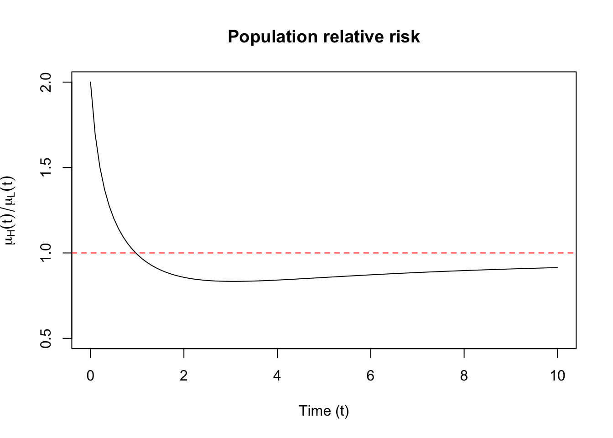

Lecture 16: Frailty
1 Frailty and unobserved variation
Sometimes we want to account for extra variability that occurs at the patient level. This is typically handled via a positive, time-invariant random variable, \(\upxi_i\), that multiplies the hazard function: \[\lambda_i(t) \mid \upxi_i = \upxi_i \lambda_0(t) e^{\mathbf{z}_i^T\boldsymbol{\beta}}\]
Then the survival function, conditional on the random variable \(\upxi_i\) is \[\begin{align} S_i(t \mid \upxi_i) & = \exp(-\upxi_i \int_0^t \lambda_0(u) e^{\mathbf{z}_i^T\boldsymbol{\beta}} du) \end{align}\] The population survival function, or that which marginalizes over the population density of \(\upxi_i\) is \[\begin{align} \ExpA{S_i(t \mid \upxi_i)}{\upxi_i} & = \ExpA{\exp(-\upxi_i \int_0^t \lambda_0(u) e^{\mathbf{z}_i^T\boldsymbol{\beta}} du)}{\upxi_i} \end{align}\]
If we assume that the frailty term is gamma distributed, we can recover an analytic form for the survival function. Let \(\Lambda_0(t)\) be the shared cumulative hazard so that the individual cumulative hazard is \(w_i \Lambda_0(t)e^{\mathbf{z}_i^T\boldsymbol{\beta}}\).
\[\begin{align*} S_i(t) & = \frac{k^\theta}{\Gamma(\theta)} \int_0^\infty \exp(-w \Lambda_0(t)e^{\mathbf{z}_i^T\boldsymbol{\beta}}) w^{\theta - 1} \exp(-k w) dw\\ & = \frac{k^\theta}{\Gamma(\theta)} \int_0^\infty w^{\theta - 1} \exp(-(k +\Lambda_0(t)e^{\mathbf{z}_i^T\boldsymbol{\beta}}) w) dw \\ & = \frac{k^\theta}{\Gamma(\theta)} \frac{\Gamma(\theta)}{(k +\Lambda_0(t)e^{\mathbf{z}_i^T\boldsymbol{\beta}})^\theta} \\ & = \left(\frac{k}{k + \Lambda_0(t)e^{\mathbf{z}_i^T\boldsymbol{\beta}}}\right)^\theta \end{align*}\] In fact, the gamma frailty model allows for analytic forms for the density as well: \[\begin{align*} f_i(t, \delta) & = \frac{k^\theta}{\Gamma(\theta)} \int_0^\infty (w \lambda_0(t)e^{\mathbf{z}_i^T\boldsymbol{\beta}})^{\delta}\exp(-w \Lambda_0(t)e^{\mathbf{z}_i^T\boldsymbol{\beta}}) w^{\theta - 1} \exp(-k w) dw\\ & = (\lambda_0(t)e^{\mathbf{z}_i^T\boldsymbol{\beta}})^{\delta}\frac{k^\theta}{\Gamma(\theta)} \int_0^\infty w^{\theta + \delta - 1} \exp(-(k +\Lambda_0(t)e^{\mathbf{z}_i^T\boldsymbol{\beta}}) w) dw \\ & = (\lambda_0(t)e^{\mathbf{z}_i^T\boldsymbol{\beta}})^{\delta}\frac{k^\theta}{\Gamma(\theta)} \frac{\Gamma(\theta + \delta)}{(k +\Lambda_0(t)e^{\mathbf{z}_i^T\boldsymbol{\beta}})^{\theta+\delta}} \\ & = (\theta \lambda_0(t)e^{\mathbf{z}_i^T\boldsymbol{\beta}})^{\delta}\frac{k^\theta}{(k +\Lambda_0(t)e^{\mathbf{z}_i^T\boldsymbol{\beta}})^{\theta+\delta}} \quad\text{nb: } \Gamma(\theta+1) = \theta \Gamma(\theta) \\ & = \left(\frac{\theta \lambda_0(t)e^{\mathbf{z}_i^T\boldsymbol{\beta}}}{k +\Lambda_0(t)e^{\mathbf{z}_i^T\boldsymbol{\beta}}}\right)^\delta \left(\frac{k}{k + \Lambda_0(t)e^{\mathbf{z}_i^T\boldsymbol{\beta}}}\right)^\theta \end{align*}\] This shows that the hazard rate is \[\frac{\theta \lambda_0(t)e^{\mathbf{z}_i^T\boldsymbol{\beta}}}{k +\Lambda_0(t)e^{\mathbf{z}_i^T\boldsymbol{\beta}}}.\] One thing to note is that, while it is a proportional hazards model conditional on \(\upxi_i\), after marginalizing over the frailty distribution it is no longer a proportional hazard model.
1.1 Marginal survival and hazard functions
Something to note is that the marginal survival function when frailty is present is calculated as \[\ExpA{e^{-\upxi \Lambda(t)}}{\upxi}.\] This is the Laplace transform of \(\upxi\): \[\mathcal{L}(c) = \ExpA{e^{-\upxi c}}{\upxi}.\] evaluated at \(\Lambda(t)\), or \(\mathcal{L}(\Lambda(t))\). Thus, if we know the Laplace transform for \(\upxi\), we’ll easily know the marginal survival function.
The relationship between the population hazard function and the population survival function can be derived by considering the density of the failure time \(X_i\) marginalizing over \(\upxi_i\): \[\begin{align} f_{X_i}(t) & = \ExpA{f_{X_i \mid \upxi_i}(t)}{\upxi_i} \\ & = \ExpA{\upxi_i \lambda_0(t) S(t \mid \upxi_i)}{\upxi_i} \\ & = \ExpA{\upxi_i \lambda_0(t) \Exp{\mathbbm{1}\left(X_i > t\right) \mid \upxi_i}}{\upxi_i} \\ & = \ExpA{\Exp{\upxi_i \lambda_0(t) \mathbbm{1}\left(X_i > t\right) \mid \upxi_i}}{\upxi_i} \\ & = \ExpA{\upxi_i \lambda_0(t) \mathbbm{1}\left(X_i > t\right)}{\upxi_i,X_i} \\ & = \ExpA{\upxi_i \lambda_0(t) \mid X_i > t}{\upxi_i} \ExpA{\mathbbm{1}\left(X_i > t\right)}{\upxi_i,X_i} \end{align}\] where the last line follows from \[\Exp{\upxi_i \mid \mathbbm{1}\left(A\right)} = \frac{\Exp{\upxi_i \mathbbm{1}\left(A\right)}}{\Exp{\mathbbm{1}\left(A\right)}}.\] Thus this shows that the population hazard, denoted \(\mu(t)\), is \[\begin{align} \mu(t) & = \frac{f_{X_i}(t)}{\Exp{\mathbbm{1}\left(X_i > t\right)}{\upxi_i,X_i}} \\ & = \ExpA{\upxi_i \lambda_0(t) \mid X_i > t}{\upxi_i} \end{align}\]
This shows another way to get to the population hazard rate: \[\begin{align*} -\frac{\partial}{\partial t} \log(S(t)) & = -\frac{\partial}{\partial t} \log \mathcal{L}(\Lambda(t)) \\ & = \frac{-\frac{\partial}{\partial t}\mathcal{L}(\Lambda(t))}{\mathcal{L}(\Lambda(t))} \\ & = -\lambda(t) \frac{\mathcal{L}(\Lambda(t))^\prime}{\mathcal{L}(\Lambda(t))} \end{align*}\]
The Laplace transform of a gamma distribution is \[\mathcal{L}(c) = \left(\frac{k}{k + c}\right)^\theta\] Given the structure of the proportional frailty model, namely \(\lambda_i(t) = \upxi_i \lambda_0(t)\), it is natural to enforce the constraint that \(\Exp{\upxi} = 1\). This would mean that \(k = \theta\). The most common way to paramterize this model is in terms of the variance, which in this case is \(\frac{\theta}{k^2} = \frac{1}{\theta}\). Let \(\nu = \frac{1}{\theta}\). Then \[\begin{align*} \mathcal{L}(c) & = \left(\frac{k}{k + c}\right)^\theta \\ & = \left(\frac{1}{1 + c/k}\right)^\theta \\ & = \left(\frac{1}{1 + c/\theta}\right)^\theta \\ & = (1 + \nu c)^{-\frac{1}{\nu}} \end{align*}\]
With a baseline hazard rate of \(\lambda_0(t)\), we get the following form for the population survival function: \[\begin{align*} S(t) & = \mathcal{L}(\Lambda(t)) \\ & = (1 + \nu \Lambda_0(t))^{-\frac{1}{\nu}} \\ \end{align*}\]
Using the fact that \[\mathcal{L}^\prime(c) = -(1 + \nu c)^{-\frac{1}{\nu}-1}\] \[\begin{align} \mu(t) & = -\lambda(t) \frac{\mathcal{L}(\Lambda(t))^\prime}{\mathcal{L}(\Lambda(t))} \nonumber\\ & = -\lambda_0(t)\frac{-(1 + \nu \Lambda_0(t))^{-\frac{1}{\nu}-1}}{(1 + \nu \Lambda_0(t))^{-\frac{1}{\nu}}}\nonumber\\ & = \frac{\lambda_0(t)}{1 + \nu \Lambda_0(t)} \end{align} \tag{1}\]
As \(\nu\) or, equivalently the variance, increases, the population hazard decreases as time increases.
This is related to the selection effect in survivors. Let’s say we want to understand the distribution of frailty for people who survive past a certain time point. We can use Laplace transforms to do so. Remember, \(S(t) = \mathcal{L}(\Lambda(t))\). If we calculate \(S(t \mid X > s)\) and we recognize the functional form as corresponding to the Laplace transform of a random variable, \(\ExpA{e^{-\upxi \Lambda(t)}}{\upxi}\) then we can say that \(\upxi\) is distributed according to the distribution corresponding to the Laplace transform.
Thus, we want the survival function for people surviving past a time \(s\), for \(t > s\): \[\begin{align} P(X > t \mid X > s) & = \frac{P(X > t)}{P(X > s)} \\ & = \frac{\Exp{e^{-\upxi \Lambda(t)}}}{\Exp{e^{-\upxi \Lambda(s)}}} \end{align}\] For the Gamma distribution we get \[\begin{align} \frac{\Exp{e^{-\upxi \Lambda(t)}}}{\Exp{e^{-\upxi \Lambda(s)}}} & = \left(k + \Lambda(t)\right)^{-\theta} \left(k + \Lambda(s)\right)^{\theta}\\ & = \left(\frac{k + \Lambda(s)}{k + \Lambda(t) }\right)^{\theta}\\ & = \left(\frac{k + \Lambda(s)}{k + \Lambda(s) + (\Lambda(t) - \Lambda(s))}\right)^{\theta} \end{align}\] This conditional survival function is the Laplace transform of a Gamma random variable with shape \(\theta\) and rate \(k + \Lambda(s)\), evaluated at \(\Lambda(t) - \Lambda(s)\). What does this show us? We know that the mean is no longer \(1\), comparing this to the Laplace transform for a Gamma random variable parameterized with \(k\) and \(\theta\): \[\mathcal{L}(c) = \left(\frac{k}{k + c}\right)^\theta.\] This variable has a mean of \[\frac{\theta}{k}.\] Thus for the survivors, the expected frailty is \[\begin{align*} \frac{\theta}{k + \Lambda(s)} \end{align*}\] This is declining as \(s\) increases. In the case where \(k = \theta = \nu^{-1}\), we get \[\begin{align*} \frac{\nu^{-1}}{\nu^{-1} + \Lambda(s)} = \frac{1}{1 + \nu \Lambda(s)} \end{align*}\]
1.2 Comparison between two risk groups with frailty
This selection effect can have consequences when comparing a group at high risk for an event and a group at low risk for an event. Suppose that the individual hazard rate for high risk group is a multiple of the hazard rate in the low-risk group \(\lambda_{0H}(t) = r \lambda_{0}(t)\) for \(r>1\). The individual hazard rates have frailties attached to them, so they are: \[\begin{align*} \lambda_{iH}(t) & = \upxi_{iH} r \lambda_{0}(t) \\ \lambda_{iL}(t) & = \upxi_{iL} \lambda_{0}(t) \end{align*}\] Let \(\mu_H(t)\) and \(\mu_L(t)\) be the population hazard rates for the high and low risk individuals, respectively. If \(\upxi_{iH}\) and \(\upxi_{iL}\) have the same density, namely a gamma with mean \(1\) and a variance equal to \(\nu\), then we can use the results from Equation 1 to derive the population relative risk: \[\begin{align*} \frac{\mu_H(t)}{\mu_L(t)} & = \frac{r \lambda_0(t)}{1 + r \nu \Lambda_0(t)}\left(\frac{\lambda_0(t)}{1 + \nu \Lambda_0(t)}\right)^{-1}\\ & = r\frac{1 + \nu \Lambda_0(t)}{1 + r \nu \Lambda_0(t)} \end{align*}\] This gives rise to a population hazard ratio comparison for the two groups, or relative risk, that is declining in time. In this example the relative risk is always above \(1\), so we would still be “right” directionally about individual relative risk from using the population relative risk comparison, namely that the high risk group has higher risk than the lower group. This is not always the case.
1.2.1 Time-varying individual relative risk
Suppose instead that the high-risk group is such that some exposure imparts has increased this group’s relative risk compared to a baseline hazard at small times but this relative risk declines to \(1\) as time increases. The function \(r(t) = 1 + e^{-t}\) satisfies this basic trajectory. If we assume that the low-risk group has a constant individual level hazard the individual hazard rates are written: \[\begin{align*} \lambda_{iH}(t) & = \upxi_{iH} (1 + e^{-t}) \\ \lambda_{iL}(t) & = \upxi_{iL} \end{align*}\] The cumulative hazard rates are: \[\begin{align*} \Lambda_{iH}(t) & = \upxi_{iH} (t + 1 - e^{-t}) \\ \Lambda_{iL}(t) & = \upxi_{iL} t \end{align*}\] This results in a population relative risk as: \[\begin{align*} \frac{\mu_H(t)}{\mu_L(t)} & = (1 + e^{-t})\frac{1 + \nu t}{1 + \nu t + \nu (1 - e^{-t})} \end{align*}\] The odd thing is that the population relative risk starts at \(2\) and declines to below \(1\) as time increases, as can be seen in Figure 1). This results in a paradox, namely that individual relative risk is always greater than \(1\) but that population relative risk does not adhere to this relationship.
1.2.2 Discontinuing treatment
Suppose that we have two treatment groups, a placebo group, and a group that receives an experimental drug. For a treatment that works, we assume that the individual baseline hazard in the placebo group is \(\upxi_i \lambda_0(t)\), while the hazard in the treatment group is \(\upxi_i r \lambda_0(t)\) for \(r < 1\). Thus, the treatment decreases the risk of an event. Suppose treatment is discontinued at time \(t_1\), and we compare the hazard ratios of the placebo and treatment groups at time \(t > 1\). The cumulative hazards are below, where \(\Lambda_{iP}(t)\) is the cumulative hazard for the placebo group, and \(\Lambda_{iT}(t)\) is the cumulative hazard in the treatment group. \[\begin{align*} \Lambda_{iP}(t) & = \upxi_{i} \Lambda_0(t) \\ \Lambda_{iT}(t) & = \upxi_{i} t (\Lambda_0(t) - \Lambda_0(t_1) + r \Lambda_0(t_1)) \\ & = \upxi_{i} t (\Lambda_0(t) + \Lambda_0(t_1)(r - 1)) \end{align*}\] Assuming a gamma distributed frailty with variance \(\nu\) yields the following ratio of the population hazard rates at time \(t\): \[\begin{align*} \frac{\mu_P(t)}{\mu_T(t)} & = \frac{\lambda_0(t)}{1 + \nu \Lambda_0(t)}\left(\frac{\lambda_0(t)}{1 + \nu \left(\Lambda_0(t) + \Lambda_0(t_1)(r - 1)\right)}\right)^{-1} \\ & = \frac{1 + \nu \Lambda_0(t) + \nu \Lambda_0(t_1)(r - 1)}{1 + \nu \Lambda_0(t)} \\ & = 1 - (1 - r) \frac{\nu \Lambda_0(t_1)}{1 + \nu \Lambda_0(t)} \end{align*}\] Thus, it will appear as if the treatment had a negative effect, namely that after discontinuing treatment the hazard increased for those in the treatment groups, though it was only the case that the treatment prevented frailer patients from failing earlier, while in the placebo group the frailest members failed earliest. Then the frailer members in the treatment group fail in the treatment group when the treatment is stopped.
1.3 False protectivity
When there are competing risks, one may observe that a covariate implies a protective effect on an event of interest even when there is no true relationship between the factors. To see why, let’s consider the following model. Suppose there are two events that may censor one another, \(B\), and \(C\), with associated time-to-event variables \(X_{iB}\) and \(X_{iB}\). Further suppose that the individual level hazard rates are \(\upxi_B \lambda_B(t)\) and \(\upxi_C \lambda_C(t)\), and that given \((\upxi_B, \upxi_C)\) the events are independent of one another. At time \(t\), the survival function is as follows: \[\begin{aligned} P(X_{iB} > t, X_{iC} > t) & = \Exp{P(X_{iB} > t, X_{iC} > t \mid \upxi_B, \upxi_C)} \\ & = \Exp{P(X_{iB} > t \mid \upxi_B) P(X_{iC} > t) \mid \upxi_C)} \\ & = \Exp{\exp\left(-\left(\upxi_B \Lambda_B(t) + \upxi_C \Lambda_C(t)\right)\right)} \end{aligned}\] If \(\upxi_B\) and \(\upxi_C\) are independent, we can take the expectation of each of these functions separately, and any covariate the influences \(B\) won’t appear to influence \(C\) on a population level, and vice versa. However, consider the following model for \(\upxi_B\) and \(\upxi_C\): \[\begin{align*} \upxi_B & = W_1 + W_3 \\ \upxi_C & = W_2 + W_3 \\ W_1, W_2, W_3 & \overset{\text{iid}}{\sim} \text{Gamma}(\nu) \end{align*}\] Then \(\upxi_B, \upxi_C\) are dependent, but using the results of our Laplace transforms earlier, we can compute the survival probability: \[\begin{align} \Exp{\exp\left(-\left(\upxi_B \Lambda_B(t) + \upxi_C \Lambda_C(t)\right)\right)} & = \Exp{e^{-W_1 \Lambda_B(t)}}\Exp{e^{- W_2 \Lambda_C(t)}}\Exp{e^{- W_3\left(\Lambda_B(t)+\Lambda_C(t) \right)}} \\ & = \mathcal{L}(\Lambda_B(t))\mathcal{L}(\Lambda_C(t))\mathcal{L}(\Lambda_B(t)+\Lambda_C(t)) \end{align}\] If we want the density of time to failure at \(t\) from \(B\), we can compute: \[-\frac{\partial}{\partial u} P(X_{iB} > u, X_{iC} > t) \mid_{u = t}\] This can be done directly from the Laplace transforms \[\begin{align} &-\frac{\partial}{\partial u} \mathcal{L}(\Lambda_B(u))\mathcal{L}(\Lambda_C(t))\mathcal{L}(\Lambda_B(u)+\Lambda_C(t)) \mid_{u = t} \\ & = -\lambda_B(t) \mathcal{L}(\Lambda_C(t))\left(\mathcal{L}^\prime(\Lambda_B(t)) \mathcal{L}(\Lambda_B(h)+\Lambda_C(t)) + \mathcal{L}(\Lambda_B(t)) \mathcal{L}^\prime(\Lambda_B(h)+\Lambda_C(t))\right) \end{align}\] In order to get the population hazard ratio, we divide the expression by \(\mathcal{L}(\Lambda_B(t))\mathcal{L}(\Lambda_C(t))\mathcal{L}(\Lambda_B(t)+\Lambda_C(t))\) to get: \[\begin{align} \Exp{\lambda_{iB}(t)} = -\lambda_B(t) \left(\frac{\mathcal{L}^\prime(\Lambda_B(t))}{\mathcal{L}(\Lambda_B(t))} + \frac{\mathcal{L}^\prime(\Lambda_B(h)+\Lambda_C(t))}{\mathcal{L}(\Lambda_B(h)+\Lambda_C(t))}\right) \end{align}\] We finally use our gamma assumption from above to get the following expression: \[\begin{align} \Exp{\lambda_{iB}(t)} = -\lambda_B(t) \left((1 + \nu \Lambda_B(t))^{-\frac{1}{\nu}} + (1 + \nu \left(\Lambda_B(t) + \Lambda_C(t)\right))^{-\frac{1}{\nu}} \right) \end{align}\]
Consider comparing population rates of occurence of event \(B\) for two levels of a binary covariate \(Z\) that positively influences the rate of occurence of event \(C\) but not of \(B\). That is \(\lambda_C(t,z) = \lambda_C(t) e^{\beta z}\) for \(\beta > 0\) and \(\lambda_B(t)\) does not depend on \(z\). The population ratio is as follows: \[\begin{align} \frac{(\Exp{\lambda_{iB}(t)})_{Z=1}}{(\Exp{\lambda_{iB}(t)})_{Z=0}} & = \frac{(1 + \nu \Lambda_B(t))^{-\frac{1}{\nu}} + (1 + \nu \left(\Lambda_B(t) + e^\beta \Lambda_C(t)\right))^{-\frac{1}{\nu}}}{(1 + \nu \Lambda_B(t))^{-\frac{1}{\nu}} + (1 + \nu \left(\Lambda_B(t) + \Lambda_C(t)\right))^{-\frac{1}{\nu}}} \\ & \leq 1 \end{align}\] by virtue of the fact that \[(1 + \nu \left(\Lambda_B(t) + e^\beta \Lambda_C(t)\right))^{-\frac{1}{\nu}} < (1 + \nu \left(\Lambda_B(t) + \Lambda_C(t)\right))^{-\frac{1}{\nu}}\] This may seem like an academic exercise, but the real-world example of this sort of false protectivity can have dire implications if it is not correctly ascertained. (Di Serio 1997) gives the example of the potential false protectivity in bone marrow transplant recipients for leukemia. In this example, there are two events that can occur after transplant: death from complications related to the transplant, such as the body rejecting the transplant (or the transplant rejecting the recipient), and relapse from leukemia. The covariate of interest is called HLA disparity, or a measure of genetic mismatch in bone marrow transplant donors and respective recipients. HLA disparity is negative in that it increases the risk of a transplant being rejected. It has been shown, however, that there is a counterintuitive protective effect from HLA disparity against the relapse of leukemia. If this is a true effect, it would have policy implications on who is selected to be a donor for a leukemia patients.
Instead, it is not possible to rule out false protectivity, namely that HLA disparity increases the risk of death from complications of transplant, and thus appears to reduce the risk of leukemia relapse in survivors. (Di Serio 1997) posits that it may be related to the health of the bone marrow after transplantation, which is unobservable. If the marrow is in a healthy state, it may be more likely to result in complications after transplant if there is an HLA disparity. On the contrary, if the marrow were in an unhealthy state under HLA disparity, there might not be complications post transplant, but instead the relapse from leukemia could be more likely.
1.4 Frailty and influence functions
Remember back to lecture 11 where we derived an expression for the influence function: \[\begin{align*} \left(-\ell_{\boldsymbol{\theta}\boldsymbol{\theta}}(\hat{\boldsymbol{\theta}}) \right)^{-1} \ell_{\boldsymbol{\theta}}(\hat{\boldsymbol{\theta}}; (t_i, \delta_i, \mathbf{z}_i)). \end{align*}\] For a survival model with a frailty term, we have the following marginal likelihood: \[\begin{align} f_i(t,\delta) = (\exp(\mathbf{z}_i^T \boldsymbol{\beta})\lambda_0(t))^\delta \int_{0}^\infty w^\delta \exp(-w \Lambda_0(t) \exp(\mathbf{z}_i^T \boldsymbol{\beta})) f(w) dw \end{align}\] Taking logs of this expression gives us \[\begin{align} \ell(\boldsymbol{\theta};t,\delta) = \delta (\mathbf{z}_i^T \boldsymbol{\beta} + \log \lambda_0(t)) + \log\left(\int_{0}^\infty w^\delta \exp(-w \Lambda_0(t) \exp(\mathbf{z}_i^T \boldsymbol{\beta})) f(w) dw \right) \end{align}\] Taking gradients of both sides with respect to \(\boldsymbol{\beta}\) gives \[\begin{align} \ell_{\boldsymbol{\beta}}(\boldsymbol{\theta};t,\delta) = \mathbf{z}_i\left(\delta - \frac{\int_{0}^\infty w^{1+\delta} \Lambda_0(t) \exp(-w \Lambda_0(t) \exp(\mathbf{z}_i^T \boldsymbol{\beta})+\mathbf{z}_i^T \boldsymbol{\beta}) f(w) dw}{\int_{0}^\infty w^\delta \exp(-w \Lambda_0(t) \exp(\mathbf{z}_i^T \boldsymbol{\beta})) f(w) dw}\right) \end{align}\] simplifying a bit to \[\begin{align} \ell_{\boldsymbol{\beta}}(\boldsymbol{\theta};t,\delta) = \mathbf{z}_i\left(\delta - \Lambda_0(t) \exp(\mathbf{z}_i^T \boldsymbol{\beta})\frac{\int_{0}^\infty w^{1+\delta} \exp(-w \Lambda_0(t) \exp(\mathbf{z}_i^T \boldsymbol{\beta})) f(w) dw}{\int_{0}^\infty w^\delta \exp(-w \Lambda_0(t) \exp(\mathbf{z}_i^T \boldsymbol{\beta})) f(w) dw}\right) \end{align}\] Compare this to the non-frailty version of the model: \[\begin{align} f_i(t,\delta) & = (\exp(\mathbf{z}_i^T \boldsymbol{\beta})\lambda_0(t))^\delta \exp(-\Lambda_0(t) \exp(\mathbf{z}_i^T \boldsymbol{\beta}))\\ \ell(\boldsymbol{\theta}; t,\delta) & = \delta (\mathbf{z}_i^T \boldsymbol{\beta} + \log \lambda_0(t)) -\Lambda_0(t) \exp(\mathbf{z}_i^T \boldsymbol{\beta}) \end{align}\] with gradients \[\begin{align} \ell_{\boldsymbol{\beta}}(\boldsymbol{\theta}; t,\delta) & = \mathbf{z}_i \left(\delta -\Lambda_0(t) \exp(\mathbf{z}_i^T \boldsymbol{\beta})\right) \end{align}\] If \(\upxi \sim \text{Gamma}(\theta,k)\), we get \[\begin{align*} \int_{0}^\infty w^\delta \exp(-w \Lambda_0(t) \exp(\mathbf{z}_i^T \boldsymbol{\beta})) f(w) dw & = \frac{k^{\theta}}{\Gamma(\theta)} \int_0^\infty \exp(-w( \Lambda_0(t)e^{\mathbf{z}_i^T\boldsymbol{\beta}} + k)) w^{\theta + \delta - 1} dw \\ & = \frac{k^{\theta}}{\Gamma(\theta)} \frac{\Gamma(\theta + \delta)}{(k + \Lambda_0(t)e^{\mathbf{z}_i^T\boldsymbol{\beta}})^{\theta + \delta}} \\ & = \left(\frac{\theta}{k}\right)^\delta \left(\frac{k}{k + \Lambda_0(t)e^{\mathbf{z}_i^T\boldsymbol{\beta}}}\right)^{\theta + \delta} \end{align*}\] and, noting that: \(\Gamma(\theta + 1 + \delta) = (\theta + \delta)\Gamma(\theta + \delta) = (\theta + \delta) \theta^\delta \Gamma(\theta)\) \[\begin{align*} \int_{0}^\infty w^{\delta+1} \exp(-w \Lambda_0(t) \exp(\mathbf{z}_i^T \boldsymbol{\beta})) f(w) dw & = \frac{k^{\theta}}{\Gamma(\theta)} \int_0^\infty \exp(-w( \Lambda_0(t)e^{\mathbf{z}_i^T\boldsymbol{\beta}} + k)) w^{\theta + 1 + \delta - 1} dw \\ & = \frac{k^{\theta}}{\Gamma(\theta)} \frac{\Gamma(\theta + 1 + \delta)}{(k + \Lambda_0(t)e^{\mathbf{z}_i^T\boldsymbol{\beta}})^\theta} \\ & = \frac{(\theta + \delta)\theta^\delta}{k^{1 + \delta}} \left(\frac{k}{k + \Lambda_0(t)e^{\mathbf{z}_i^T\boldsymbol{\beta}}}\right)^{\theta + 1 + \delta} \end{align*}\] The ratio of these two expressions gives: \[\begin{align} \frac{\theta + \delta}{k + \Lambda_0(t)e^{\mathbf{z}_i^T\boldsymbol{\beta}}} \end{align}\] Incorporating this into the expression above and substituting \(k = \theta = \nu^{-1}\) we get: \[\begin{align} \ell_{\boldsymbol{\beta}}(\boldsymbol{\theta}; t,\delta) = \mathbf{z}_i\left(\delta - \Lambda_0(t) \exp(\mathbf{z}_i^T \boldsymbol{\beta})\frac{1 + \nu \delta}{1 + \nu \Lambda_0(t)e^{\mathbf{z}_i^T\boldsymbol{\beta}}}\right) \end{align}\] We can see that when \(\delta = 1\) the term: \[\frac{1 + \nu \delta}{1 + \nu \Lambda_0(t)e^{\mathbf{z}_i^T\boldsymbol{\beta}}}\] shrinks the cumulative hazard term \(\Lambda_0(t) \exp(\mathbf{z}_i^T \boldsymbol{\beta})\) towards zero if the cumulative hazard term is greater than 1 and away from zero otherwise. When \(\delta = 0\) the term shrinks the \(\Lambda_0(t) \exp(\mathbf{z}_i^T \boldsymbol{\beta})\) towards zero. This should act to shrink extreme residuals towards zero.
1.5 Cox PH with omitted variables
This is an important point when thinking about the Cox proportional hazards model and omitted variable bias. We can think of this problem similarly to frailty. Suppose the true hazard function is the following: \[\begin{align} \lambda_i(t) = \lambda_0(t) \exp(z_{i1} \beta_1 + z_{i2} \beta_2) \end{align}\] but that we don’t observe \(z_{i2}\). Then we can think of the observed model as a frailty model: \[\begin{align} \lambda_i(t) = \upxi_i \lambda_0(t) \exp(z_{i1} \beta_1) \end{align}\] where \(\upxi_i = e^{z_{i2} \beta_2}\). If we suppose that \(z_{i2}\) has a population distribution, then the marginal hazard function is what we’ll be inferring when fitting a Cox model: \[\begin{align} \mu_i(t) \mid z_{i1} = \Exp{e^{z_{i2} \beta_2} \mid z_{i1}}\lambda_0(t) \exp(z_{i1} \beta_1) \end{align}\] Assuming that \(\beta_2 \neq 0\), we can use our results from above \[\begin{align*} \mu_i(t) \mid z_{i1} & = -\lambda_0(t) \exp(z_{i1} \beta_1) \frac{\mathcal{L}_{e^{z_{i2} \beta_2} \mid z_{i1}}(\Lambda(t))^\prime}{\mathcal{L}_{e^{z_{i2} \beta_2} \mid z_{i1}}(\Lambda(t))} \end{align*}\] This will not typically be a proportional hazards model anymore. Suppose, for argument’s sake, that \(e^{z_{i2}\beta_2} \mid z_{i1}\) was gamma distributed with a rate parameter depending on \(z_{i1}\). Then \[\mu_i(t) \mid z_{i1} = \frac{\theta \lambda_0(t)e^{z_{i1} \beta_1}}{k(z_{i1}) + \Lambda_0(t)e^{ z_{i1} \beta_1}}.\] and \[\begin{align*} \frac{\mu_i(t) \mid z_{i1} }{\mu_j(t) \mid z_{j1}} = e^{(z_{i1} - z_{j1})\beta_1}\frac{k(z_{j1}) + \Lambda_0(t)e^{ z_{j1} \beta_1}}{k(z_{i1}) + \Lambda_0(t)e^{ z_{i1} \beta_1}} \end{align*}\] This is clearly not a PH model, so any PH model we use will result in biased inferences and bad coverage, though you can create scenarios in which the bias isn’t too bad, and coverage can be corrected by using the sandwich covariance estimator.
1.5.1 Asymptotic bias of Cox PH with omitted variables
In linear regression we can compute the exact bias of our coefficients when we have omitted variables.
Suppose we have data generated according to the following linear regresson model, where \(Y \in \R^n\), \(X_1\) is an \(n \times p_1\) matrix of predictors seen by the analyst and \(X_2\) is an \(n \times p_2\) matrix of predictors not observed by the analyst: \[Y = X_1 \beta_1 + X_2 \beta_2 + \epsilon.\] If we fit the regression \(Y = X_1 \tilde{\beta}_1 + \epsilon\), we can compute the bias for estimator \(\hat{\tilde{\beta}}_1 = (X_1^T X_1)^{-1}X_1^T Y\) for \(\beta_1\): \[\begin{align} \Exp{\hat{\tilde{\beta}}_1} - \beta_1 & = (X_1^T X_1)^{-1}X_1^T\Exp{X_1 \beta_1 + X_2 \beta_2 + \epsilon} - \beta_1\\ & = (X_1^T X_1)^{-1}X_1^T X_1 \beta_1 + (X_1^T X_1)^{-1}X_1^T X_2 \beta_2 + (X_1^T X_1)^{-1}X_1^T\Exp{\epsilon} - \beta_1\\ & = (X_1^T X_1)^{-1}X_1^T X_2 \beta_2 \end{align}\] Thus, if \(X_2\) is orthogonal to the column space of \(X_1\), we will get no bias in our estimator for \(\beta_1\), but if \(X_2\) is not orthogonal to \(X_1\) we will have bias. In fact, we can decompose the bias by projecting \(X_2\) onto the column space of \(X_1\) with the projection matrix \(P_{X_1} = X_1 (X_1^T X_1)^{-1}X_1^T\), and writing \(X_2 = P_{X_1} X_2 + (I - P_{X_1})X_2\), noting that \(X_1^T(I - P_{X_1}) = 0\): \[\begin{align} (X_1^T X_1)^{-1}X_1^T X_2 \beta_2 & = (X_1^T X_1)^{-1}X_1^T \left(P_{X_1} X_2 + (I - P_{X_1})X_2\right)\beta_2 \\ & = (X_1^T X_1)^{-1}X_1^T P_{X_1} X_2 \beta_2 \end{align}\] Thus, only the information in \(X_2\) that is in the column space of \(X_1\) matters for the bias of our estimator \(\hat{\tilde{\beta}}_1\).
The bias of the Cox PH model with omitted variables cannot be computed exactly, but we can derive a formula for the asymptotic bias, which is proven in (Kiefer and Skoog 1984). Similar to the omitted variables problem above, let \(\beta_1\) be the coefficient vector in \(\R^{p_1}\) for the covariates observed by the analyst, \(\mathbf{z}_{1i}\) and \(\beta_2\) are the coefficients in \(\R^{p_2}\) for \(\mathbf{z}_{2i}\) that are unobservable. We’ll derive the bias in a model agnostic way, with the only requirement being that we’ve set one set of coefficients to zero, while the others are left to be estimated with this restriction in place. Let \(\hat{\beta}_1(\beta_2)\) be the restricted MLE for \(\beta_1\) when \(\beta_2\) is set to a value. The unrestricted MLE would be \(\hat{\beta}_1(\hat{\beta}_2)\). \(\hat{\beta}_1(0)\) is then the restricted MLE for \(\beta_1\) where \(\beta_2 = 0\). The idea is to do a Taylor expansion of the unrestricted ML estimator for \(\beta_1\), \(\hat{\beta}_1(\hat{\beta}_2)\) around \(\beta_2 = 0\): \[\hat{\beta}_1(\hat{\beta}_2) \approx \hat{\beta}_1(\beta_2 = 0) + \frac{\partial \hat{\beta}_1(\beta_2)}{\partial \beta_2}\mid_{\beta_2 = 0} \hat{\beta}_2\] Thus the asymptotic bias of \(\hat{\beta}_1(\beta_2 = 0)\) can be approximated by \[-\frac{\partial \hat{\beta}_1(\beta_2)}{\partial \beta_2}\mid_{\beta_2 = 0} \hat{\beta}_2.\] The term that needs a bit of work is \(\frac{\partial \hat{\beta}_1(\beta_2)}{\partial \beta_2}\), which we can derive from noting that \(\hat{\beta_1}(\beta_2)\) solves the score equations: \[\nabla_{\beta_1} \sum_{i=1}^n \log f(x_i \mid \beta_1, \beta_2) \mid_{\beta_1 = \hat{\beta}_1(\beta_2)} = 0\] Now we differentiate this in terms of \(\beta_2\): \[\begin{align} 0 & = \nabla_{\beta_2} \left(\nabla_{\beta_1} \sum_{i=1}^n \log f(x_i \mid \beta_1, \beta_2) \mid_{\beta_1 = \hat{\beta}_1(\beta_2)}\right)\\ & = \nabla_{\beta_1}^2\sum_{i=1}^n \log f(x_i \mid \beta_1, \beta_2) \mid_{\beta_1 = \hat{\beta}_1(\beta_2)}\nabla_{\beta_2} \hat{\beta}_1(\beta_2) + \nabla_{\beta_2,\beta_1} \sum_{i=1}^n \log f(x_i \mid \beta_1, \beta_2) \mid_{\beta_1 = \hat{\beta}_1(\beta_2)} \end{align}\] The term we need to solve for is \(\nabla_{\beta_2} \hat{\beta}_1(\beta_2)\), so, assuming that \[\nabla_{\beta_1}^2\sum_{i=1}^n \log f(x_i \mid \beta_1, \beta_2) \mid_{\beta_1 = \hat{\beta}_1(\beta_2)}\] is invertible, we get: \[\nabla_{\beta_2} \hat{\beta}_1(\beta_2) = -\left(\nabla_{\beta_1}^2\sum_{i=1}^n \log f(x_i \mid \beta_1, \beta_2) \mid_{\beta_1 = \hat{\beta}_1(\beta_2)}\right)^{-1} \nabla_{\beta_2,\beta_1} \sum_{i=1}^n \log f(x_i \mid \beta_1, \beta_2) \mid_{\beta_1 = \hat{\beta}_1(\beta_2)}\] Finally we get that the asymptotic bias of \(\hat{\beta}_1(0)\) is \[\hat{\beta}_1(\beta_2 = 0) - \hat{\beta}_1(\hat{\beta}_2) = -\left(\nabla_{\beta_1}^2\sum_{i=1}^n \log f(x_i \mid \beta_1, \beta_2) \mid_{\beta_1 = \hat{\beta}_1(0)}\right)^{-1} -\nabla_{\beta_2,\beta_1} \sum_{i=1}^n \log f(x_i \mid \beta_1, \beta_2) \mid_{\beta_1 = \hat{\beta}_1(0)} \hat{\beta}_2.\] This is the asymptotic covariance for \(\hat{\beta}_1(0)\) left multiplied by the negative block of the Fisher information related to \(\beta_1\) and \(\beta_2\). Not surprisingly, if \(\beta_1\) and \(\beta_2\) are asymptotically independent, there is no asymptotic bias in omitting \(\beta_2\) from the model. The other insight is that if \(\beta_1\) is very precisely estimated, and the information matrix for \(\beta_1, \beta_2\) is small, there won’t be much asymptotic bias. These ideas are related to sensitivity testing that is prevalent in econometrics. The tests derived from this expression are explored in detail in (Magnus and Vasnev 2007).
Another way to think about this is by fixing \(\beta_2 = \beta_2^\dagger\), or the true value of \(\beta_2\). We would then get the asymptotic bias as \[\hat{\beta}_1(\beta_2 = 0) - \hat{\beta}_1(\beta^\dagger_2) = -\left(\nabla_{\beta_1}^2\sum_{i=1}^n \log f(x_i \mid \beta_1, \beta_2) \mid_{\beta_1 = \hat{\beta}_1(0)}\right)^{-1} \left(-\nabla_{\beta_2,\beta_1} \sum_{i=1}^n \log f(x_i \mid \beta_1, \beta_2) \mid_{\beta_1 = \hat{\beta}_1(0)} \beta^\dagger_2\right).\] This is in the spirit of (Kiefer and Skoog 1984).
We can evaluate this general expression for the asymptotic bias in Cox models. Let the partial likelihood of the true model generating the data be: \[\begin{align} PL(\boldsymbol{\beta}_1^\dagger, \boldsymbol{\beta}_2^\dagger) & = \prod_{i=1}^k \left(\frac{\exp(\mathbf{z}_i^T \boldsymbol{\beta}^\dagger_1 + \mathbf{x}_i^T \boldsymbol{\beta}^\dagger_2)}{\sum_{j \in R(t_i)} \exp(\mathbf{z}_j^T \boldsymbol{\beta}^\dagger_1+\mathbf{x}_j^T \boldsymbol{\beta}^\dagger_2)}\right) \end{align}\] where \(t_1 < t_2 < \dots < t_k\) are the unique \(k\) uncensored failure times in a set of \(n\) observations. The analyst fits the restricted model assuming that \(\boldsymbol{\beta}_2 = 0\), which results in a restricted MLE \(\hat{\boldsymbol{\beta}}_1(\mathbf{0})\). We’ll write the empirical probability of failure for the \(j^{\mathrm{th}}\) participant at time \(t_i\) under parameter \(\beta\) as: \[p_j(\boldsymbol{\beta}_1, \boldsymbol{\beta}_2, t_i) = \frac{\exp(\mathbf{z}_j^T \boldsymbol{\beta}_1 + \mathbf{x}_j^T \boldsymbol{\beta}_2)}{\sum_{\ell \in R(t_i)} \exp(\mathbf{z}_\ell^T \boldsymbol{\beta}_1 + \mathbf{x}_\ell^T \boldsymbol{\beta}_2)}.\] Under the misspecified model, this quantity will be written \(p_j(\hat{\boldsymbol{\beta}}_1(\mathbf{0}), \mathbf{0}, t_i)\). Then we can write the asymptotic bias as: \[\begin{align} \begin{split} & \left(\sum_{i=1}^k \sum_{j \in R(t_i)} \left(\mathbf{z}_j - \ExpA{\mathbf{z} \mid \hat{\boldsymbol{\beta}}_1(\mathbf{0})}{R(t_i)}\right)\left(\mathbf{z}_j - \ExpA{\mathbf{z} \mid \hat{\boldsymbol{\beta}}_1(\mathbf{0})}{R(t_i)}\right)^T p_j(\hat{\boldsymbol{\beta}}_1(\mathbf{0}), \mathbf{0}, t_i) \right)^{-1} \\ & \times \left(\sum_{i=1}^k \sum_{j \in R(t_i)} \left(\mathbf{z}_j - \ExpA{\mathbf{z} \mid \hat{\boldsymbol{\beta}}_1(\mathbf{0})}{R(t_i)}\right)\left(\mathbf{x}_j - \ExpA{\mathbf{x} \mid \hat{\boldsymbol{\beta}}_1(\mathbf{0})}{R(t_i)}\right)^T p_j(\hat{\boldsymbol{\beta}}_1(\mathbf{0}),\mathbf{0}, t_i) \right)\boldsymbol{\beta}_2^\dagger \end{split} \end{align}\] This can be expanded a bit to yield something a little more interpretable. For ease of notation, let’s use the following shorthand for the true conditional expectations of \(\mathbf{z}\), and \(\mathbf{x}\) on the risk set at \(t_i\): \[\ExpA{\mathbf{z}}{i} = \ExpA{\mathbf{z} \mid \boldsymbol{\beta}}{R(t_i)},\,\ExpA{\mathbf{x}}{i} = \ExpA{\mathbf{x} \mid \boldsymbol{\beta}}{R(t_i)},\] and write the modeled conditional expectations \[\widehat{\ExpA{\mathbf{z}}{i}} = \ExpA{\mathbf{z} \mid \hat{\boldsymbol{\beta}}_1(\mathbf{0})}{R(t_i)},\,\widehat{\ExpA{\mathbf{x}}{i}} = \ExpA{\mathbf{x} \mid \hat{\boldsymbol{\beta}}_1(\mathbf{0})}{R(t_i)},\] The first term in the inner sum above can be rewritten, where we omit the \(i\) because each sum conditions on \(i\): \[\begin{align*} & \sum_{j \in R(t_i)} \left(\mathbf{z}_j - \widehat{\Exp{\mathbf{z}}}\right)\left(\mathbf{z}_j - \widehat{\Exp{\mathbf{z}}}\right)^T p_j(\hat{\boldsymbol{\beta}}_1(\mathbf{0}), \mathbf{0}, t_i) \\ & = \sum_{j \in R(t_i)} \left(\mathbf{z}_j - \Exp{\mathbf{z}} + \Exp{\mathbf{z}} - \widehat{\Exp{\mathbf{z}}}\right)\left(\mathbf{z}_j - \Exp{\mathbf{z}} + \Exp{\mathbf{z}} - \widehat{\Exp{\mathbf{z}}}\right)^T p_j(\hat{\boldsymbol{\beta}}_1(\mathbf{0}), \mathbf{0}, t_i) \\ & = \sum_{j \in R(t_i)} \left(\mathbf{z}_j - \Exp{\mathbf{z}} \right)\left(\mathbf{z}_j - \Exp{\mathbf{z}}\right)^T p_j(\hat{\boldsymbol{\beta}}_1(\mathbf{0}), \mathbf{0}, t_i) \\ & + \sum_{j \in R(t_i)} \left(\Exp{\mathbf{z}} - \widehat{\Exp{\mathbf{z}}}\right)\left(\Exp{\mathbf{z}} - \widehat{\Exp{\mathbf{z}}}\right)^T p_j(\hat{\boldsymbol{\beta}}_1(\mathbf{0}), \mathbf{0}, t_i) \\ & + \sum_{j \in R(t_i)} \left(\mathbf{z} - \Exp{\mathbf{z}}\right)\left(\Exp{\mathbf{z}} - \widehat{\Exp{\mathbf{z}}}\right)^T p_j(\hat{\boldsymbol{\beta}}_1(\mathbf{0}), \mathbf{0}, t_i) \\ & + \sum_{j \in R(t_i)} \left(\Exp{\mathbf{z}} - \widehat{\Exp{\mathbf{z}}}\right)\left(\mathbf{z} - \Exp{\mathbf{z}}\right)^T p_j(\hat{\boldsymbol{\beta}}_1(\mathbf{0}), \mathbf{0}, t_i) \end{align*}\] The second to last line above simplifies to \[\begin{align*} & \sum_{j \in R(t_i)} \left(\mathbf{z} - \Exp{\mathbf{z}}\right)\left(\Exp{\mathbf{z}} - \widehat{\Exp{\mathbf{z}}}\right)^T p_j(\hat{\boldsymbol{\beta}}_1(\mathbf{0}), \mathbf{0}, t_i) \\ & = \left(\widehat{\Exp{\mathbf{z}}} - \Exp{\mathbf{z}} \right)\left(\Exp{\mathbf{z}} - \widehat{\Exp{\mathbf{z}}}\right)^T \\ & = \sum_{j \in R(t_i)} \left(\widehat{\Exp{\mathbf{z}}} - \Exp{\mathbf{z}} \right)\left(\Exp{\mathbf{z}} - \widehat{\Exp{\mathbf{z}}}\right)^T p_j(\hat{\boldsymbol{\beta}}_1(\mathbf{0}), \mathbf{0}, t_i) \\ & = -\sum_{j \in R(t_i)} \left(\Exp{\mathbf{z}} - \widehat{\Exp{\mathbf{z}}} \right)\left(\Exp{\mathbf{z}} - \widehat{\Exp{\mathbf{z}}}\right)^T p_j(\hat{\boldsymbol{\beta}}_1(\mathbf{0}), \mathbf{0}, t_i) \end{align*}\] and the last line simplifies to the same expression, so we get \[\begin{align*} & \sum_{j \in R(t_i)} \left(\mathbf{z}_j - \widehat{\Exp{\mathbf{z}}}\right)\left(\mathbf{z}_j - \widehat{\Exp{\mathbf{z}}}\right)^T p_j(\hat{\boldsymbol{\beta}}_1(\mathbf{0}), \mathbf{0}, t_i) \\ & = \sum_{j \in R(t_i)} \left(\mathbf{z}_j - \Exp{\mathbf{z}} \right)\left(\mathbf{z}_j - \Exp{\mathbf{z}}\right)^T p_j(\hat{\boldsymbol{\beta}}_1(\mathbf{0}), \mathbf{0}, t_i) \\ & - \sum_{j \in R(t_i)} \left(\Exp{\mathbf{z}} - \widehat{\Exp{\mathbf{z}}}\right)\left(\Exp{\mathbf{z}} - \widehat{\Exp{\mathbf{z}}}\right)^T p_j(\hat{\boldsymbol{\beta}}_1(\mathbf{0}), \mathbf{0}, t_i) \end{align*}\] The second term, \[\sum_{i=1}^k \sum_{j \in R(t_i)} \left(\mathbf{z}_j - \ExpA{\mathbf{z} \mid \hat{\boldsymbol{\beta}}_1(\mathbf{0})}{R(t_i)}\right)\left(\mathbf{x}_j - \ExpA{\mathbf{x} \mid \hat{\boldsymbol{\beta}}_1(\mathbf{0})}{R(t_i)}\right)^T p_j(\hat{\boldsymbol{\beta}}_1(\mathbf{0}),\mathbf{0}, t_i)\] simplifies in the same way to yield: \[\begin{align*} & \sum_{j \in R(t_i)} \left(\mathbf{z}_j - \Exp{\mathbf{z}} \right)\left(\mathbf{x}_j - \Exp{\mathbf{x}}\right)^T p_j(\hat{\boldsymbol{\beta}}_1(\mathbf{0}), \mathbf{0}, t_i) \\ & - \sum_{j \in R(t_i)} \left(\Exp{\mathbf{z}} - \widehat{\Exp{\mathbf{z}}}\right)\left(\Exp{\mathbf{x}} - \widehat{\Exp{\mathbf{x}}}\right)^T p_j(\hat{\boldsymbol{\beta}}_1(\mathbf{0}), \mathbf{0}, t_i) \end{align*}\]
Thus, we get the following expression for the asymptotic bias: \[\begin{align} \begin{split} & \left(\sum_{i=1}^k \sum_{j \in R(t_i)} \left(\left(\mathbf{z}_j - \ExpA{\mathbf{z}}{i} \right)\left(\mathbf{z}_j - \ExpA{\mathbf{z}}{i}\right)^T - \left(\ExpA{\mathbf{z}}{i} - \widehat{\ExpA{\mathbf{z}}{i}}\right)\left(\ExpA{\mathbf{z}}{i} - \widehat{\ExpA{\mathbf{z}}{i}}\right)^T\right)p_j(\hat{\boldsymbol{\beta}}_1(\mathbf{0}),\mathbf{0}, t_i)\right)^{-1} \\ & \times \left(\sum_{i=1}^k \sum_{j \in R(t_i)} \left(\left(\mathbf{z}_j - \ExpA{\mathbf{z}}{i} \right)\left(\mathbf{x}_j - \ExpA{\mathbf{x}}{i}\right)^T - \left(\ExpA{\mathbf{z}}{i} - \widehat{\ExpA{\mathbf{z}}{i}}\right)\left(\ExpA{\mathbf{x}}{i} - \widehat{\ExpA{\mathbf{x}}{i}}\right)^T \right)p_j(\hat{\boldsymbol{\beta}}_1(\mathbf{0}),\mathbf{0}, t_i) \right)\boldsymbol{\beta}_2^\dagger \end{split} \end{align}\] Suppose that \(\ExpA{\mathbf{z}}{i} \approx \widehat{\ExpA{\mathbf{z}}{i}}\) for all \(i\), then the asymptotic bias simplifies to: \[\begin{align} \left(\sum_{i=1}^k \sum_{j \in R(t_i)} \left(\mathbf{z}_j - \ExpA{\mathbf{z}}{i} \right)\left(\mathbf{z}_j - \ExpA{\mathbf{z}}{i}\right)^Tp_j(\hat{\boldsymbol{\beta}}_1(\mathbf{0}),\mathbf{0}, t_i)\right)^{-1} \left(\sum_{i=1}^k \sum_{j \in R(t_i)} \left(\mathbf{z}_j - \ExpA{\mathbf{z}}{i} \right)\left(\mathbf{x}_j - \ExpA{\mathbf{x}}{i}\right)^T p_j(\hat{\boldsymbol{\beta}}_1(\mathbf{0}),\mathbf{0}, t_i) \right)\boldsymbol{\beta}_2^\dagger \end{align}\]
References
Di Serio, Clelia. 1997. “The Protective Impact of a Covariate on Competing Failures with an Example from a Bone Marrow Transplantation Study.” Lifetime Data Analysis 3: 99–122.
Kiefer, Nicholas M., and Gary R. Skoog. 1984. “Local Asymptotic Specification Error Analysis.” Econometrica 52 (4): 873. https://doi.org/10.2307/1911189.
Magnus, Jan R., and Andrey L. Vasnev. 2007. “Local Sensitivity and Diagnostic Tests.” The Econometrics Journal 10 (1): 166–92. https://doi.org/10.1111/j.1368-423X.2007.00204.x.